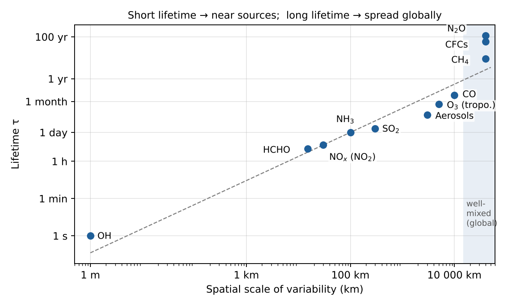
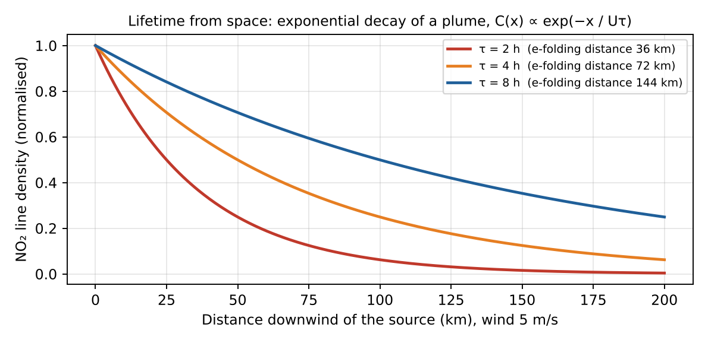
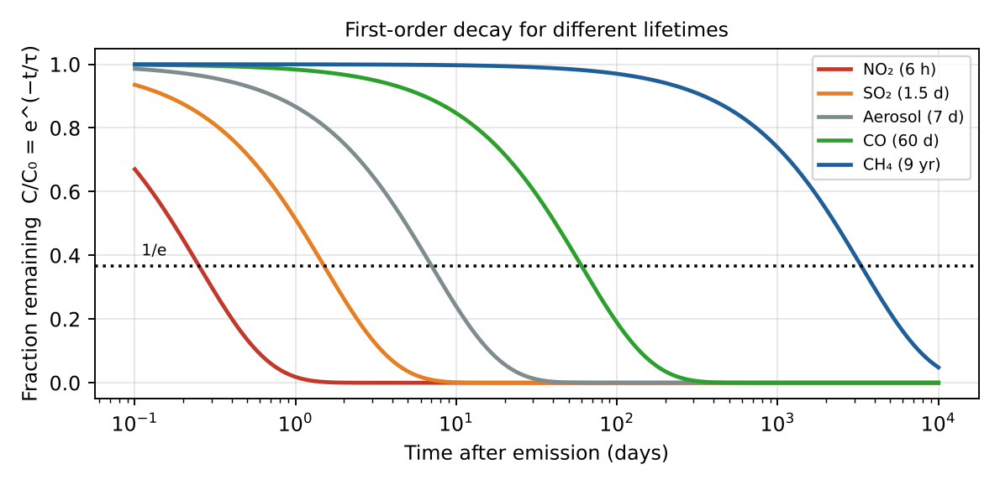

Bể chứa và thời gian sống của chất ô nhiễm
Sinks and lifetime of air pollutants — Đề cương chương 1
Sáu bể chứa của chất ô nhiễm
Oxy hóa bởi OH
Bể chứa chính của khí phản ứng.
CO + OH → CO₂ + H
CO + OH → CO₂ + H
Quang phân
Photon UV/khả kiến phá phân tử.
NO₂ + hν → NO + O
NO₂ + hν → NO + O
Lắng đọng khô
Hấp thụ tại bề mặt, không cần mưa.
F = −vd·C
F = −vd·C
Lắng đọng ướt
Rainout (trong mây) và washout (dưới mây).
Khí tan và aerosol
Khí tan và aerosol
Hóa học dị thể
Phản ứng trên hạt hoặc giọt mây.
N₂O₅ → HNO₃
N₂O₅ → HNO₃
Vận chuyển ra khỏi vùng
Lên tầng bình lưu rồi quang phân.
N₂O, CFC
N₂O, CFC
Thời gian sống và bể chứa song song
Định nghĩaτ = M / L (ổn định: τ = M / P)
Nhiều bể chứa song song1/τ = 1/τchem + 1/τphot + 1/τdry + 1/τwet
Hóa học bậc nhấtτchem = 1 / (k·[OH])
M: lượng tồn trữ (khối lượng hoặc số phân tử). L: tốc độ mất tổng. Các tốc độ mất cộng lại, nên τ tổng luôn ngắn hơn bể chứa nhanh nhất.
Hình dung
Bồn nước có nhiều lỗ thoát: các tốc độ thoát cộng lại, các thời gian thì không cộng.Ví dụ: thời gian sống của CO theo OH
k ≈ 2×10−13 cm³ s−1
[OH] ≈ 1×106 cm−3
[OH] ≈ 1×106 cm−3
τ = 1/(k[OH]) = 5×106 s
≈ 58 ngày ≈ 2 tháng
≈ 58 ngày ≈ 2 tháng
- Đổi giây sang ngày: chia cho 86 400
- Có OH nhiều (nhiệt đới) thì CO sống ngắn hơn
- Sống ≈ 2 tháng: đủ để CO cháy rừng vượt đại dương
Ví dụ song song
Hóa học 2 ngày, lắng đọng khô 3 ngày, lắng đọng ướt 6 ngày: 1/τ = 1/2 + 1/3 + 1/6 = 1 → τ = 1 ngày.Kiểm bằng Python: τ = 57,87 ngày cho CO; tổng song song = 1,000 ngày.
Thời gian sống và thời gian vận chuyển
Sống ngắn (giờ – ngày)
Bản đồ ≈ bản đồ nguồn: điểm nóng ở thành phố, nhà máy, tàu, cháy.
NO₂, SO₂, HCHO
NO₂, SO₂, HCHO
Sống vừa (tuần – tháng)
Thấy vệt khói quy mô lục địa: CO cháy rừng, bụi vượt Đại Tây Dương.
Sống dài (năm – thế kỷ)
Trộn đều: bản đồ gần đồng nhất, biến thiên ~1%. Cần độ chính xác cao.
CO₂, CH₄, N₂O
CO₂, CH₄, N₂O
Quãng đường L ≈ U·τ (U ≈ 5–10 m/s). Trộn quanh dải vĩ độ: vài tuần; liên bán cầu: ~1 năm.
Thời gian sống theo quy mô biến động

Hình 1 (đề cương): thời gian sống so với quy mô không gian của biến động — bậc độ lớn.
Suy ra thời gian sống từ vệt khói

Hình 2: NO₂ giảm hàm mũ phía sau gió; vệt càng ngắn thì τ càng nhỏ.
τ = L / U = 50 000 m / 5 m s−1 = 104 s ≈ 2,8 giờ
Đo độ dài e-fold L của vệt NO₂; khớp hàm mũ C(x) ∝ exp(−x/(U·τ)).
Đường suy giảm bậc nhất

Hình 3: C/C₀ = e−t/τ cho NO₂, SO₂, aerosol, CO, CH₄ (trục thời gian logarit).
Tại t = τ còn e−1 ≈ 36,8%; một nửa mất sau t½ = τ ln 2 ≈ 0,69 τ.
Thời gian sống điển hình (bậc độ lớn)
| Loài | Thời gian sống | Bể chứa chính | Trên bản đồ |
|---|---|---|---|
| NO₂ (lớp biên) | 2–12 giờ | OH → HNO₃; N₂O₅ | Điểm nóng |
| SO₂ | 1–2 ngày | OH, pha nước, khô | Nguồn điểm, núi lửa |
| Aerosol (đối lưu) | ~1 tuần | Lắng đọng khô và ướt | Vệt vùng |
| CO | 1–2 tháng | OH | Vệt liên lục địa |
| CH₄ | 9–12 năm | OH, đất, bình lưu | Gần đồng đều |
| N₂O, CFC | 50–120 năm | Quang phân bình lưu | Trộn đều |
Exam checklist — Chương 1
1
Liệt kê ≥ 4 bể chứa: OH, quang phân, lắng đọng khô, lắng đọng ướt (+ dị thể, vận chuyển)
2
Định nghĩa τ = M/L; gộp bằng 1/τ = Σ 1/τᵢ
3
So sánh τ với thời gian vận chuyển: τ ngắn → bản đồ nguồn; τ dài → đồng đều
4
Bậc độ lớn: giờ (NO₂), ngày (SO₂), tuần (aerosol), tháng (CO), chục năm (CH₄), thế kỷ (N₂O, CO₂)
Ý chính
- Sáu bể chứa: OH, quang phân, lắng đọng khô/ướt, dị thể, vận chuyển
- τ = M/L và 1/τ = Σ 1/τᵢ
- τ ngắn → bản đồ giống nguồn; τ dài → đồng đều
- NO₂ giờ · SO₂ ngày · CO tháng · CH₄ chục năm